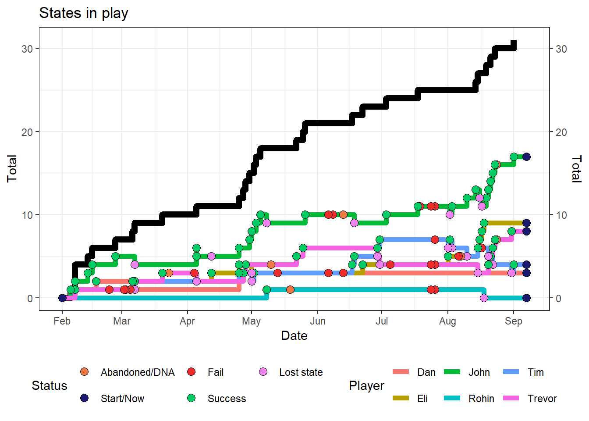
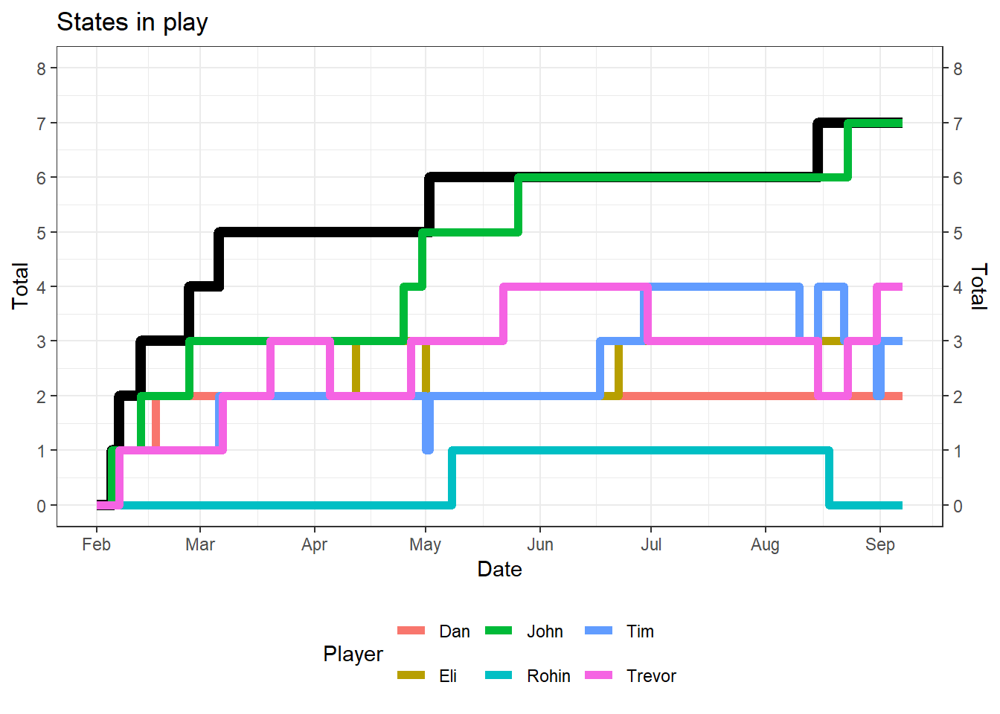
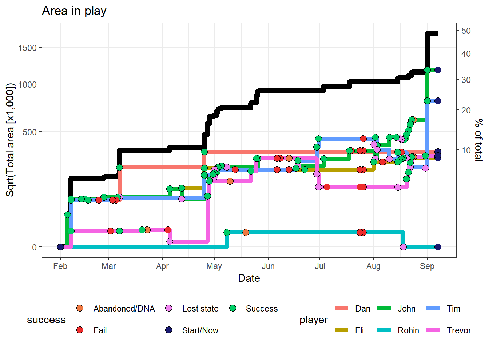
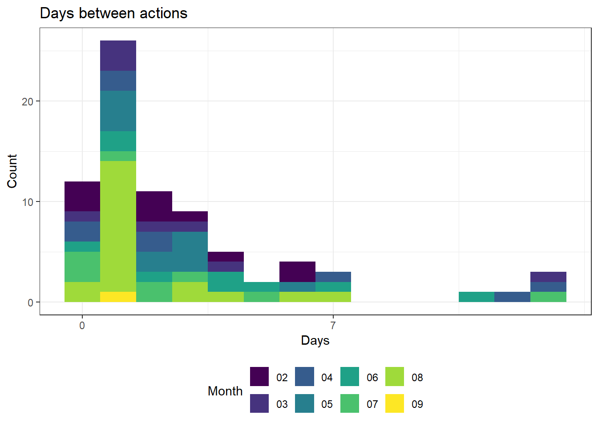
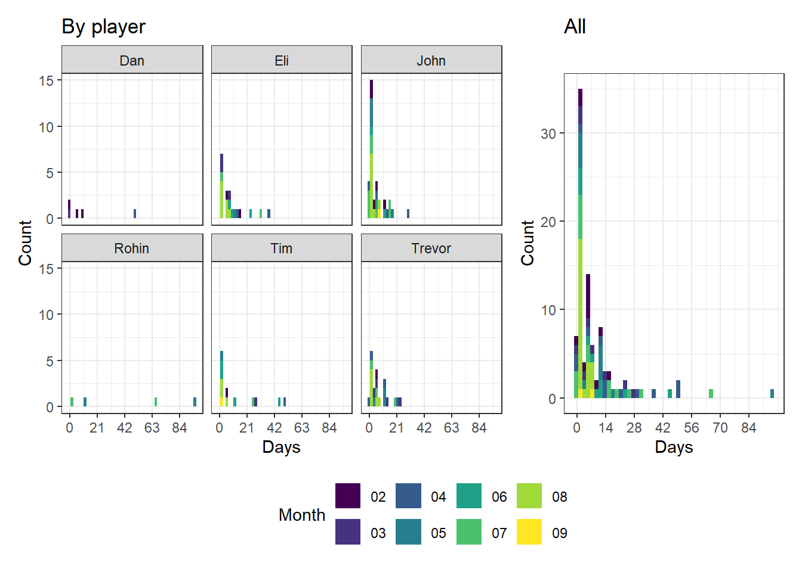
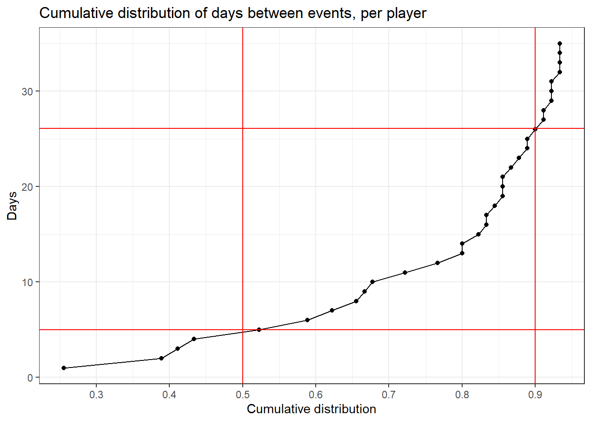
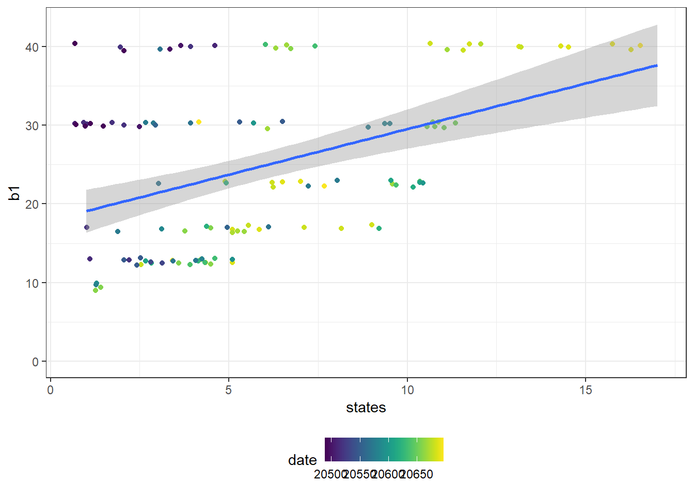
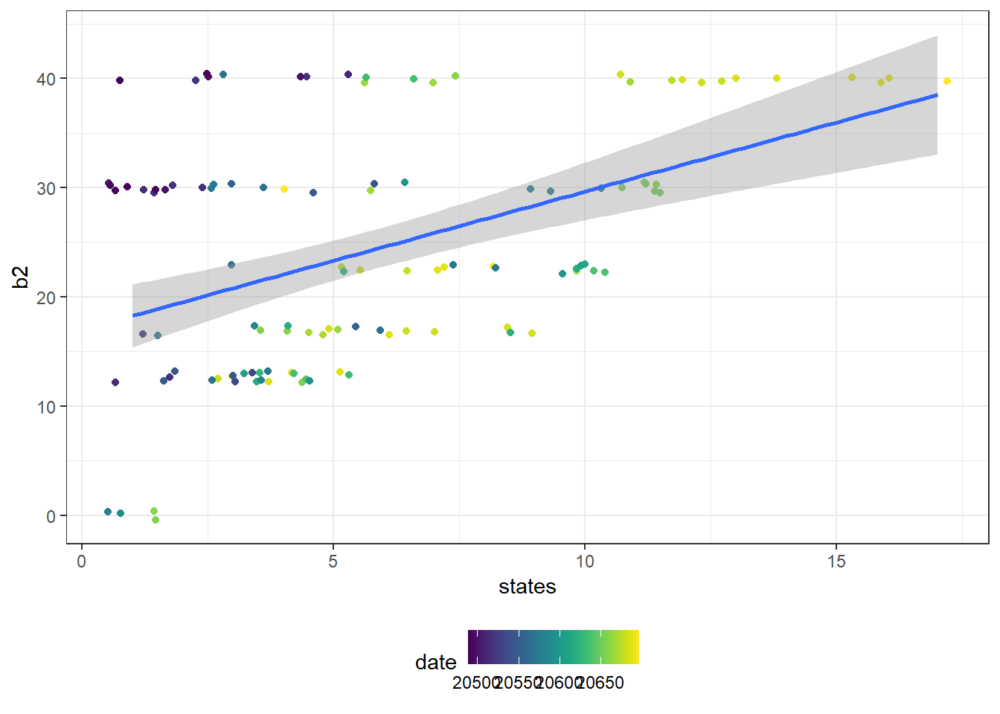

states_inplay <- sort(unique(events4$state[events4$success == "Success"]))
states_attempted <- sort(unique(events4$state))Manifest Destiny Report
Introduction
First, we describe some basic statistics about the game so far.
State acquisition
There are 65 total states, 59 in North America now that DC is in play, and six in the International Region. So far, 31 have been captured and 37 attempted (84% of attempted states captured). So far, 48% of the total states have been captured.
- Captured: AB+SK, Africa, AK, Atl. Canada, BC, CA, CO, Europe, HI, IL, IN, KY, MA, MD, ME, MI, MN, NC, NH, NJ, NY, OH, OR, PA, RI, UT, VA, VT, WA, WI, WV
- Attempted, but uncaptured: Caribb., DE, FL, GA, MB+ON, TX

On average, 0.131 new states were captured each day, or 3.9 per month, with an estimated 47.7 by the end of the game.
Region acquisition
We need to calculate the number of unique regions in play (out of 8 total). The regions that have been captured are:
- Great Lakes, International, Mid-Atlantic, Mountain/Plains, New England, Southeast, The Frontier
Leaving the following uncaptured regions:
- Southwest

Total area captured
Now let’s calculate the total area on the board.

The above plot’s \(y\) axis has been square root-transformed to minimize the effect of claiming Alaska. So far, we have claimed 1722038 square miles, or 49% (of the US, the rest of the world is assigned no area).
Time between actions
One goal we have is to offer a bonus to individuals who do not travel for a while. Here we calculate the time between game events.

The max time between all events was 13 days, average: 2.75. But the more relevant metric is by player, where the max per-player time between events was 96 days, average: 9.71 days.

And the percentiles were as follows:
0% 10% 20% 30% 40% 50% 60% 70% 80% 90% 100%
0.0 1.0 1.0 1.0 2.0 5.0 6.0 10.2 13.0 24.8 96.0 However, this may be skewed by events that took place on the same day (fails, captures + attacks), so we take out events that happened 0 days after the previous.
0% 10% 20% 30% 40% 50% 60% 70% 80% 90% 100%
1.0 1.0 1.0 2.0 3.0 5.0 7.0 11.0 13.4 26.1 96.0 So if we want drawing a card to be an 90th-percentile action, then that should be about 24.8 - 26.1 days. The below plot shows how many days pass between actions at each percentile; i.e. if you want a player to draw a card between half of all trips, then that should be every 5 days. This plot excludes intervals of 0 in the calculation of the cumulative distribution and goes as high as 5 weeks (35 days).

Area bonus
The next question is, is the area bonus (\(b\)) functioning as a catch-up mechanic, or it it only reinforcing the leader? The area bonus multipliers, \(b^\prime\), as percent of the total number of states is as follows, although the last-place player is given a \(b^\prime\) of 0 in the actual scoring:
[1] 0.200 0.150 0.112 0.084 0.063 0.047These numbers are hard to interpret. At 20 states in play, the smallest \(b^\prime\) (\(b^\prime{}_6 = 0.047\)) results in a \(b\) fairly close to 10 (21 results in a closer \(b\), but 20 is nicer):
\[ b_6 = 9.4 = 200 \times b^\prime{}_6 \]
We’re going to call \(b\) standardized at 20 states \(B_{20}\).
[1] 40.0 30.0 22.4 16.8 12.6 9.4The below plot shows \(B_{20}\) for each game state, colored by date. This is because early in the game, the leader might have had one or two states and score an outsize bonus. This highlights that most of the large bonuses with less than five states came early in the game This plot does not replace the last-place player with a score of 0. Player states where they had no area are excluded. Each of these plots jitters the points to avoid overplotting.
`geom_smooth()` using formula = 'y ~ x'
The \(R^2\) for the base model is 0.194.
`geom_smooth()` using formula = 'y ~ x'
The \(R^2\) for the with-0s model is 0.205. All players — except Rohin — held a state (with area) by Feb. 7, but that includes Eli, Dan, and Tim sharing Utah. By March 7, Dan had captured California, setting him out of that group. Eli and Tim wouldn’t be differentiated until April 7, so if we eliminate events before March 7, we can fit two new models that ignore early game weirdness.
arank1_mar7_lm <- lm(b1 ~ states, data = filter(arank, date > "2026-03-07"))
arank2_mar7_lm <- lm(b2 ~ states, data = filter(arank, date > "2026-03-07"))The \(R^2\)s for these models (without and with 0-replacement) are 0.489 and 0.503, respectively. These high \(R^2\) values suggest that the area bonus is mostly just acting as a bonus for the leading player.
Challenges
We set an initial challenge success rate goal of 67%. Naturally, attacks should have a higher success \((S)\) rate than that. There is some disagreement on how to calculate success. The purpose of the Abandoned/DNA \((A)\) success outcome is to consider challenges that failed mostly because of out-of-game factors, or where a final score could not be calculated.
Therefore we have:
- Success\(_1\): Successes divided by success, fails \((F)\), and DNAs, \(\sigma_1 = S / (S + F + A)\), i.e., real-world success rate.
- Success\(_2\): Sucesses divided by successes and fails, \(\sigma_2 = S / (S + F)\), i.e. success rate given that you found time for the challenge.
We have also conventionally been calculating each capture/attack as one event; regardless of the team size. We can multiply those out, i.e., counting one for each player, which we’ll call \(\sigma^*_x\).
The raw counts (collapsed across attack types) are shown below:
| Abandoned/DNA | Fail | Success | Sum | |
|---|---|---|---|---|
| Attack | 2 | 9 | 20 | 31 |
| Capture | 5 | 10 | 31 | 46 |
| Sum | 7 | 19 | 51 | 77 |